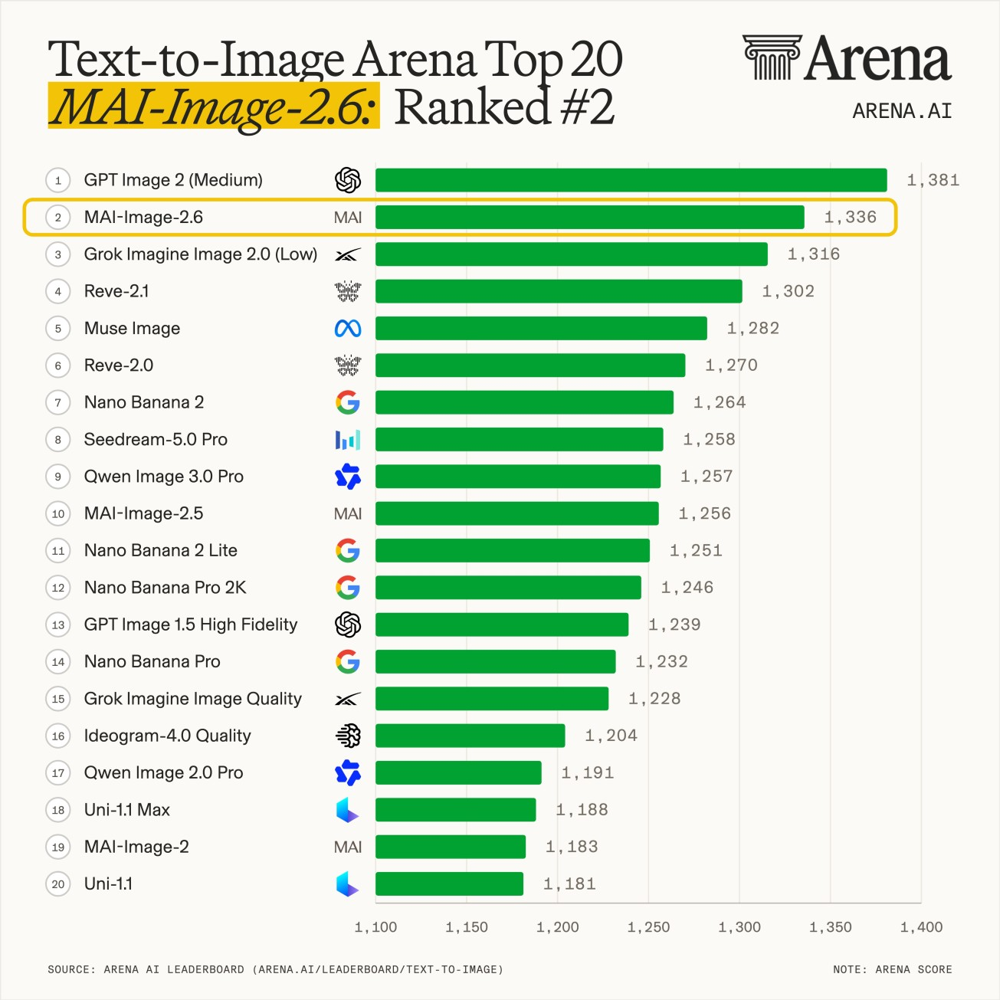
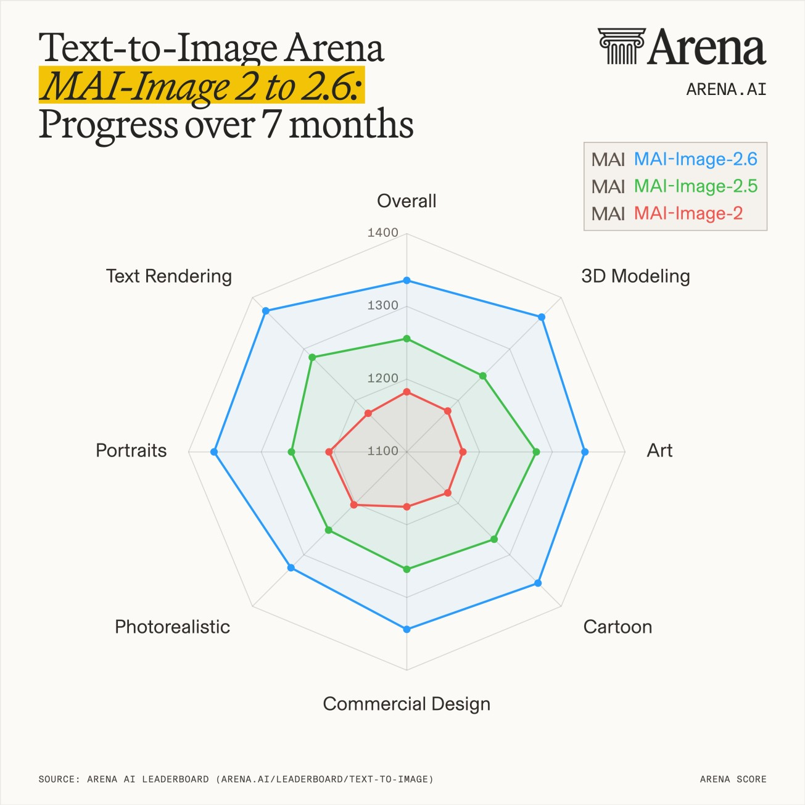
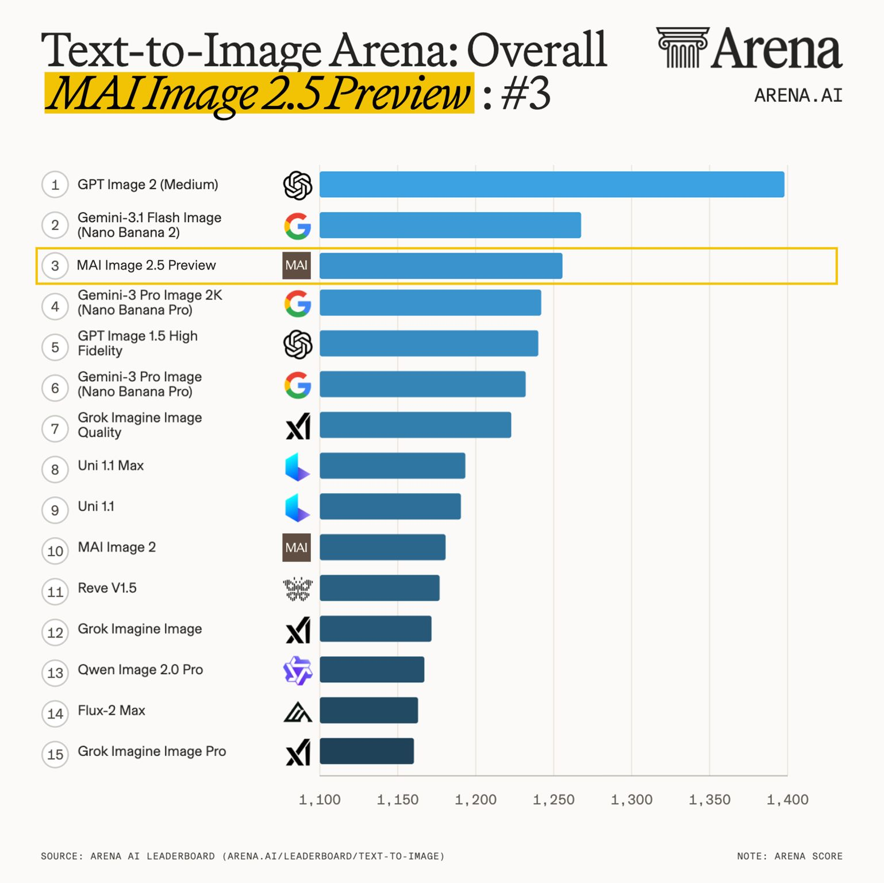
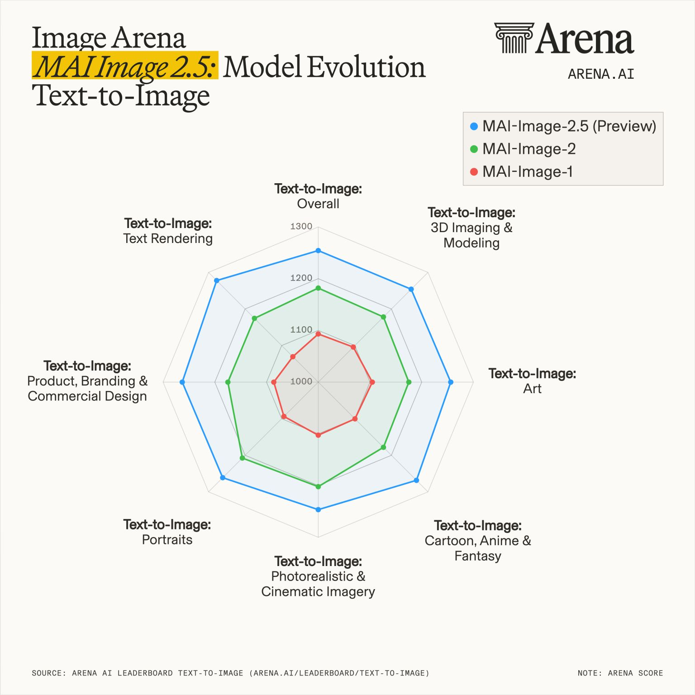

MAI Image Series Models
I am a core contributor to the MAI Image Series Models, focusing on post-training. My work spans reward model design, vision-language model RL for prompt enhancement, RL for captioning models, and diffusion RL.


Model updates
MAI-Image-2.6 · Foundry availability update: Microsoft confirmed general availability. Source ↗
MAI-Image-2.6 · I2I ranked #1 for image editing on Artificial Analysis. Source ↗
MAI-Image-2.6 · T2I ranked #2 on Text-to-Image Arena. Source ↗
MAI-Image-2.5 launched at #3 for text-to-image and #2 for image editing on Arena.
MAI-Image-2 launched, bringing MAI to #3 among text-to-image model families on Arena.




Arena release snapshot · Click an image to enlarge · Source ↗
Earlier Arena results
The 2.5 Preview debuted at #3 on Text-to-Image Arena, with a score of 1,254. This earlier release snapshot precedes the 2.6 chart above.




Earlier release snapshot · Click an image to enlarge · Source ↗